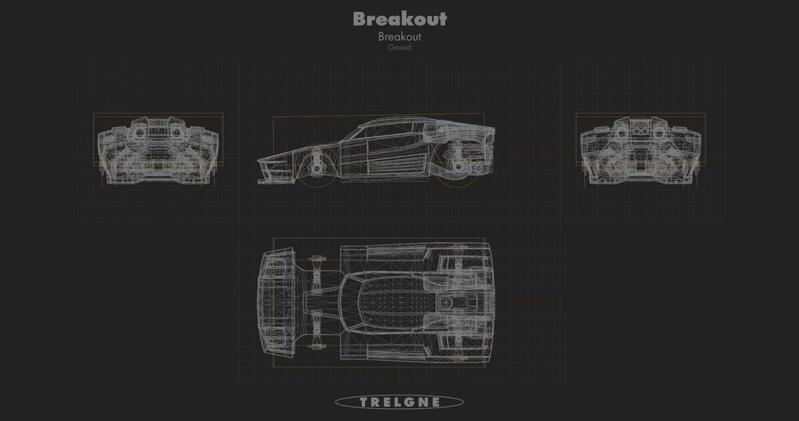
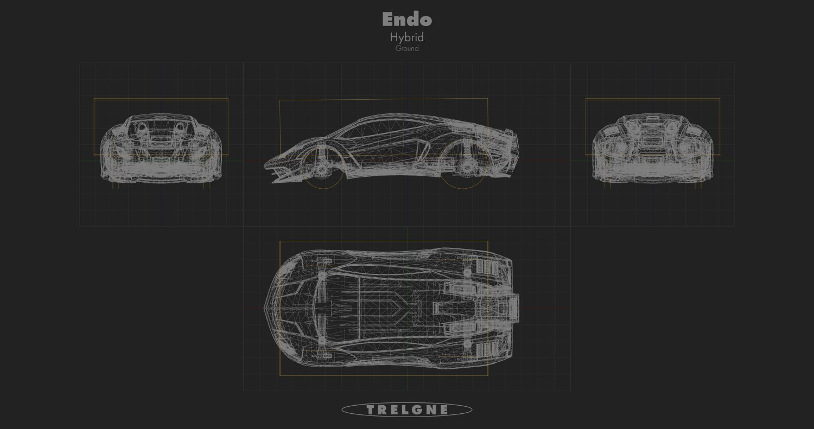
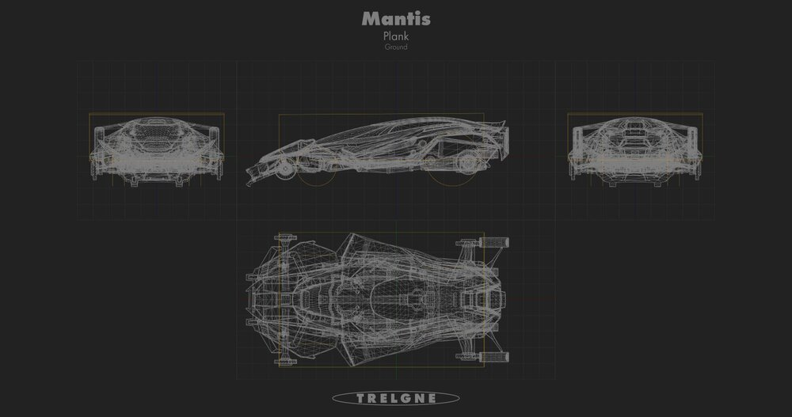

Existe alguma diferença entre os carros?
Alguns jogadores da Rocket League podem pensar que um carro específico é mais rápido
ou tem um impulso mais forte do que outros, mas a única diferença entre os carros no jogo são seus hitboxes. O hitbox é
basicamente a caixa invisivel que fica em volta de cada carro e é responsável pelo toque na bola. A hitbox determina
como a bola e outros carros interagem entre si.Leva em consideração comprimento, peso, altura, superfície e volume.
Esses recursos variam entre os cinco tipos de hitboxes: Dominus, Breakout, Hybrid, Merc, Octane e Plank.
Entre os cinco tipos, os carros Octane e Dominus são os mais populares na comunidade
da Rocket League e no cenário de esportes eletrônicos. No final das contas, depende da sua preferência e com qual
hitbox você está acostumado a jogar.
Octane Hitbox
Tem um comprimento menor entre os outros e é o carro mais alto, o que traz mais controle de bola ao bater pela frente ou pelo lado do carro.

Imagem ilustrativa da hitbox do octane, carro do Rocket League — Foto: Ilustração
Dominus Hitbox
Este é um carro de hitbox muito equilibrado, então é uma boa escolha para iniciantes que estão se acostumando com a mecânica do jogo.

Imagem ilustrativa da hitbox do dominus, Carro do Rocket League — Foto: Ilustração
Brekout Hitbox
O Breakout é o hitbox dos carros mais estreitos e tem a menor largura de todos.

Imagem ilustrativa da hitbox do brekout, Carro do Rocket League — Foto: Ilustração
Hitbox Hibrida
Esse é muito semelhante ao Dominus, porém um pouco mais alto, e tem uma pequena semelhança ao octane em largura.

Imagem ilustrativa da hitbox hibrida — Foto: Ilustração
Merc Hitbox
Esse tem apenas dois carros com a caixa do mesmo, e é muito reconhecível pela sua aparência de tanque, tem praticamente todas as características quadradas e exageradas.

Imagem ilustrativa da hitbox do merc, Carro do Rocket League — Foto: Ilustração
Plank Hitbox
Plank é o carro mais curto, mas compensa na largura, cobrindo uma área maior para acertar a bola durante o vôo.

Imagem ilustrativa da hitbox plank — Foto: Ilustração
Desenvolvedores: Luis Felippe & Kauê Ronald
O site abrange conteúdos relacionados ao jogo Rocket League, criado pela Psyonix, tal conteúdo foi escolhido por ambos
os desenvolvedores, pois os mesmos possuem conhecimento e jogam o jogo frequentemente. O intuito desse site é trazer
informações sobre o jogo e aplicar os conhecimentos adquiridos na disciplina de Linguagens de Marcação.